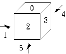
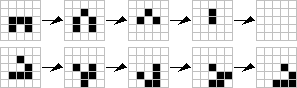

Simulation
程度★ 難度★
陽春召我以煙景，大塊假我以文章。《李白．春夜宴桃李園序》
Simulation
Simulation就是「模擬」。撰寫程式，去模擬一個行為。
通常一個Simulation的問題，會詳述定義程式的功能與效果，並且規定一套固定的運作流程，程式必須有樣學樣、執行動作。程式設計人員不需要額外設計複雜的演算法，只需要照著題目的描述，建構適當的資料結構來儲存資訊，撰寫行為相仿的程式碼。
Simulation主要是在考驗程式設計人員編寫程式碼的功力，而非考驗程式設計者的急智和創意。Simulation可說是程式設計的基本功──問題說得清清楚楚，不用設計複雜的演算法，只要照著規定做就好。這類題目很適合程式設計的初學者。
另外，有一些目前尚未解決的經典問題，由於目前沒有好的演算法，所以只能乖乖的照著問題要求來模擬。這一類的問題也就變成Simulation的問題了。
UVa 10550
舉例：轉骰子（Dice Rotation）
有兩個骰子，上面的點數順序，可能是亂的或是重複的。請辨別兩個骰子一不一樣。骰子經過旋轉後，如果六個對應的面，上面的點數皆相同，則骰子視為相同。
骰子一共有六個面──上下前後左右。我們可以用六個變數，來個別存六個面上頭的點數。用陣列也行。
讓陣列的第0格存入上面的值、第1格存左面的值，以此類推。當然也可以採用不同的方法來存。
若要讓骰子旋轉，則有三種旋轉方向。一、水平方向，二、垂直方向，三、順時鐘／逆時鐘方向。若要寫成程式，也不難。這裡示範水平方向朝西的旋轉。
要辨別兩個骰子一不一樣，則必須好好的旋轉其中一顆骰子，再跟另一顆比對。必須將骰子所有可能的情形都轉出來才行。我個人偏好這麼個轉法：水平方向轉一圈，順時針方向轉一圈，垂直方向轉一下，將以上動作連續做四次。如此可轉出所有情形。當然也可以採用不同的方法來轉。
事實上只需轉24次就可以了，讀者可以想想看怎麼做。
UVa 253 10877
舉例：踩地雷（Minesweeper）
UVa 10189 10279 11142 ICPC 4335
舉例：撲克牌（Poker）
撲克牌相信大家都玩過，試著用程式模擬一場撲克牌遊戲吧！
http://mathworld.wolfram.com/Cards.html
http://mathworld.wolfram.com/topics/CardGames.html
UVa 127 131 162 170 178 181 451 462 555
舉例：下棋（Board Game）
使用棋盤進行的遊戲。例如象旗、西洋棋、將旗、圍棋、五子棋、黑白棋。考慮人工智慧之前，先來模擬下棋規則、設計一支下棋程式吧！
編寫程式時，可以抽取概念成為一個功能，稱作抽象化（abstraction）。
舉例來說，要設計一支五子棋程式，首先要把五子棋的位置記錄起來。以平面二維座標做為模型嗎？以二維陣列做為模型嗎？
五子棋獲勝條件是五子連線。五子連線有八個不同方向，但是都是一直線──用「直線判斷」這個概念抽取出來，寫成一支function。讀者可以想一想，function的參數是什麼？如何用此function判斷獲勝？
UVa 220 852 10196 10363 10996 11210
舉例：生命遊戲（The Game of Life）
生命遊戲是相當有名的數學問題。以關鍵字「數學 生命遊戲」可以搜尋到許多資料。另外生命遊戲也有個專有名詞叫做cellular automata，也可以試著往這方面找資料。
生命遊戲是這樣的：現在有一個二維的方格平面，每個格子都有一個細胞，可能是生的，可能是死的。而我們知道一開始哪些格子有細胞，細胞的生命狀況會隨時間變動，規則如下：
復活：一個死的細胞，若是它的八個鄰居，有三個細胞是活的，則在下一刻復活。 存活：一個活的細胞，若是它的八個鄰居，有兩個或三個細胞是活的，則在下一刻存活。 死於孤單：一個活的細胞，若是它的八個鄰居，只有零個或一個細胞是活的，則在下一刻死亡。 死於擁擠：一個活的細胞，若是它的八個鄰居，有四個以上的細胞是活的，則在下一刻死亡。
我們可以弄兩張地圖，第一張地圖儲存現在這個時刻的狀態，第二張地圖儲存下一個時刻的狀態。然後兩張地圖交替使用，以節省記憶體空間。可以嘗試將一個細胞延展的過程寫成一個函式，以利於程式碼的閱讀。
為了讓地圖能夠交叉利用、節省空間，將程式碼做點修正。
這裡提供兩個Applet，相當有趣：
http://www.bitstorm.org/gameoflife/
http://www.math.com/students/wonders/life/life.html
UVa 447 457 10443 10507
舉例：蘭頓的螞蟻（Langton's Ant）
http://mathworld.wolfram.com/LangtonsAnt.html
http://en.wikipedia.org/wiki/Langton's_ant
跟生命遊戲很相像，不過這個遊戲更神奇。
一、格子有黑與白兩種顏色。 二、螞蟻走入白格則右轉，走入黑格則左轉。 三、螞蟻離開格子時，格子顏色顛倒。
驚人的是，乍看完全沒有規律的路線，卻在10647步之後開始循環。原因至今不明。
UVa 11664